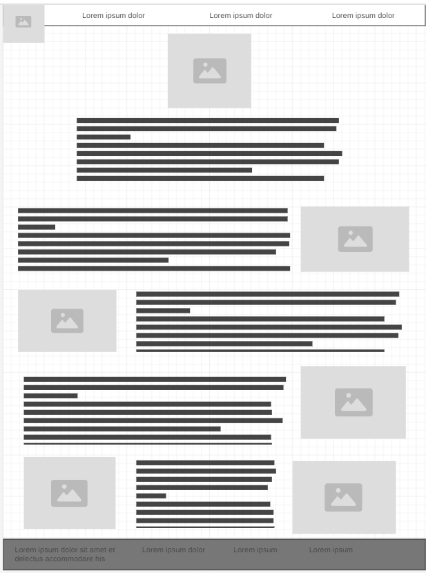
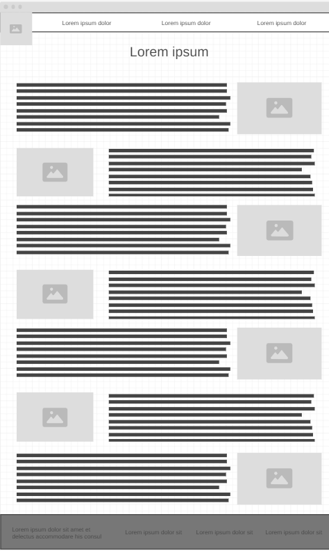
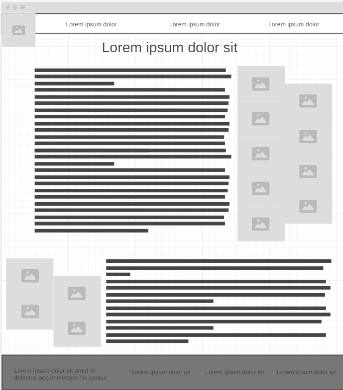

Overview
Purpose
The purpose of this webpage is to provide insight into me and my background. It will be a resource that I can use as a resume of sorts, to display past projects, experiences, and qualifications.
Audience
My audience is future employers or others who may be looking at my qualifications and/or experience related to cars or web design.
Branding
CM Automotive
Style Guide
Color Palette
Palette URL:
https://coolors.co/495b40-d1b96b-eff7ff-0b132b-36558f| Primary | Secondary | Accent 1 | Accent 2 | Accent 3 |
|---|---|---|---|---|
| [#495B40] | [#d1b96b] | [#eff7ff] | [#0b132b] | [#36558f] |
Typography
Heading Font: Quintessential
Paragraph Font: Merienda
Brainstorm ideas
The thought behind this website is that it will be a portfolio depicting my automotive-related experience. I have recently decided to change my major and thought this would be a useful way to bridge the gap between my previous major and my future major. This could be used as a resume of sorts, bringing people such as future employers to the website to learn more about me and my automotive experiences, while also proving my ability as a web designer. In addition, this could be a positive resource for those looking to learn a little bit about cars and wanting to get into the car world. This website will answer questions concerning my background in the automotive world, and show my interest in the field. Questions related to my experiences outside of that field will also be answered along the way. I am hoping that my audience will be interested in looking through all the pages on my site, learning more about me, but also hopefully about cars in general. I hope that the pictures will be helpful as a learning resource, but also as an entertainment form. I am hoping that the themes in this page will be visually pleasing and help the readers to enjoy the overall experience more. Research and brainstorming for different images and designs will be necessary, as well as finding a way to make this an informational resource about more than just me. In the context of a future employer, there will likely not be other resources available to get to know me. But in terms of people trying to learn more about cars, I'm hoping that this site can provide interesting insights that are simple to understand. I think that having many resources in one place will also be beneficial to them.
Colored paragraph example
Welcome to CM Automotive! My name is Coleman McBride and I am an Automotive Engineering Technology Major at Brigham Young University-Idaho. This webpage is meant to be an educational resource for those looking to learn more about cars, from the history, to maybe finding a vehicle that fits their style.
Navigation
Site Map
Content
Home page
Welcome to CM Automotive! My name is Coleman McBride and I am an Automotive Engineering Technology Major at Brigham Young University-Idaho. This webpage is meant to be an educational resource for those looking to learn more about cars, from the history to finding a vehicle that fits their style.
Automobiles as we know them have existed for nearly 140 years, starting with the Benz Patent-Motorwagen. Learn more about how cars have changed and transformed over the years.
What car is right for you? Learn more about the different styles of cars that exist, their pros and cons, and find out which type of car fits you best!
About the Author
I am an Automotive Engineering Technology major at Brigham Young University- Idaho, currently in my Sophomore year. I grew up in Elizabethtown, Pennsylvania, where I had five siblings and two wonderful parents. My fiance, Shay, and I will be married later this summer.
My love for cars began on a family vacation, where my cousins and I would guess the car brand of an approaching vehicle. Ever since then, I've enjoyed spotting and identifying cars on the road and researching the newest models as they are released. I've also attended a number of motor shows, including the Harrisburg Auto Show, Corvettes at Carlisle, and Chrysler Nationals. I'm a proud owner of a 2010 Volvo XC70, and my dream car is a Lotus Evora 400.
Images for the Home page


History
-The automobile has been around in some form since 1886, when German inventor Karl Benz created the Benz Patent-Motorwagen.
-For over a decade, automobiles were seen as a toy for the rich, until Ford Motor Company, led by Henry Ford, created the Ford Model T in 1908. This vehicle revolutionized the car market, allowing automobile ownership to be available to the general populus instead of only the rich.
-Cars continued to shift and change in shape and form until the WWII, when many automotive manufacturers shifted their resources towards the war effort. Their massive factories were used to manufacture tanks, weapons, planes, and other war-related vehicles.
-While the war put a pause on the car market, many important developments came about as a result. Infrastructure expansion, coupled with improved engine, safety, and comfort technologies, increased popularity of the automobile in the US.
-Gas crises in the 1970s led to further developments in the auto industry, shifting the focus from large gas-guzzling vehicles to smaller, more fuel-efficient vehicles. Interest in hybrid, electric, and other alternative fuel types increased, and emissions regulations became more strict.
-In the late 1990s and early 2000s, hybrid vehicles began to become more mainstream, through the introduction of models such as the Toyota Prius and Honda Insight.
-Tesla Motors began selling the Model S in 2012, marking one of the first mainstream fully-electric vehicles. These hybrid and electric technologies have become staples of the modern car market, and many major manufacturers have plans to "electrify" their entire line of vehicles in the coming years.
Images for the Page 2


Finding a Car for You
There are many different types of automobiles available in today's world. On this page, you will find different styles of cars with an example or two for reference. Browse the following options below to find a car for you!
Body Styles:
Compact car - Smaller vehicles that boast higher gas mileage and great
maneuverability, but often at the cost of size and power
Sedan - A classic style defined by a four-door layout and a traditional
trunk that provides a middle ground between a compact car and an SUV in
terms of efficiency and size
Coupe - Sporty vehicles with only two doors, trading convenience for
style and driving dynamics
Station Wagon - A popular pick in the late 1900s that has fallen off in
today's market. Known for spacious interiors, capability, and
interesting styling.
SUV (Sport Utility Vehicle) - Larger vehicles that are designed for
versatility and capability, boasting spacious interiors and space to
five to seven passengers
Minivan - America's family car, typically featuring three flexible rows
of seating, making it perfect for larger groups
Truck - Known for their high ride and utility, both in terms of cargo
space and towing, trucks are a very popular pick
Convertible - The retractable roof allows for an open-air driving
experience, offering a blend of sporty performance and luxury
Sports car - Basically an upgraded coupe, focused completely on the
driving experience, often boasting agressive styling
Fuel Types:
Gasoline - The most common fuel type, due in part to widespread
refueling infrastructure, a large variety of models. This has been the
staple fuel type for over a century.
Diesel - Known for their fuel efficiency and high torque, these are
often found in heavy-duty vehicles and are great for long distance
travel. Often found in trucks, inluding semis, and SUVs.
Hybrid - A combination between gas or diesel and an electric motor,
allowing for improved efficiency and reduced emissions.
Fully-Electric (EVs) - An increasingly popular fuel type characterized
by zero emissions during operation, but requiring charging from an
external power source.
Hydrogen - A rare fuel type, due to a developing infrastructure, that
uses fuel cells to convert hydrogen gas to electricity, powering an
electric motor. Known for being environmentally friendly, boasting quick
refueling times, and extended range.
Images for the Page 3


Wireframes
Create three wireframes for your site. One for each page and list them here
Home
[Any additional details about home that the wireframe does not make clear]
[Page 2]
[Any additional details about page 2 that the wireframe does not make clear]
[Page 3]
[Any additional details about page 3 that the wireframe does not make clear]
